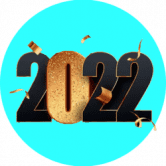 WinSwap 我们的目标是支持 DeFi 市场中的所有代币并降低进入门槛。 WinSwap 支持 5 条链中超过 10K 的代币：以太坊、币安智能链、Polygon、Fantom 和 Avalan
Wipies Wipies 是区块链上最大的数字卫生纸集合。 10,000 个 Wipies 中的每一个都和下一个一样特别，但有些 Wipies 比其他的更稀有。 Wipies 有不同的稀有度，从超稀有的“神器”到常见的“
WOWswap WOWswap 是一种去中心化杠杆交易协议，运行在以太坊、币安智能链、Solana、Avalanche、IoTeX 和 Polygon Network 上。 交易者可以以高达 5 倍的杠杆买卖
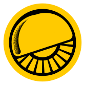 Wrap Protocol 什么是包装？ 通过 Wrap，用户发行 wToken（包装代币），代表 Tezos 区块链上的 ERC20 和 ERC721 代币。然后 wTokens 可以在 Tezos 区块链上使用，它们的价值与原始代币挂钩
Wrapped Cryptopunks Wrapped Punks 可帮助您将原始 Cryptopunks 转换为标准 ERC721，并通过接受赏金或在 Rarible 或 Opensea 等市场上市将您的 Cryptopunks 变成现金。 包裹朋克 将您的 CryptoPunks 变成 ERC721 CryptoPunks 是第一个 NFT。它们
X Marketplace X Marketplace 是您的 NFT 主页：用户不仅可以买卖，还可以使用我们为收藏家提供的行业首创的估值和投资组合管理工具来管理他们的 NFT 投资组合。 使用 X Marketp
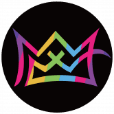 X World games X World Games 是下一代去中心化区块链游戏生态系统。 “X World”代表着一个未知的宇宙有待探索，而“游戏”则代表着更多的游戏将被添加到这个生态系统中
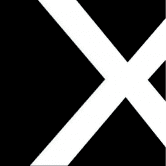 X-HASH X-Hash Finance (X-HASH) 是一个农场平台，为投资者提供多个高收益池，为传统池提供了另一种选择。 Xhash 是一个面向权益、农场和矿池的 DeFi 平台，它有一个彩票系统，并将添加一
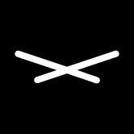 Xarb 一个基于 Tezos 的 NFT 市场，用于建立您的 ART 社区，我们是 Tezos 区块链上的 NFT 市场，提供在我们的平台上创建（铸币）、购买和销售独特、多版正宗数字艺术品的机会。
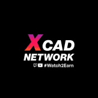 XCAD XCAD Network 是一个通过 Creator 标记化利用 Content Creator 观众价值的平台，观众获得用于粉丝治理的奖励。 我们当然已经跳过了一些障碍来达到这一点，但是我们很高兴现在宣布 Transak 的
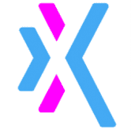 Xion Finance Xion Global 通过结合 3 个去中心化应用程序创建了一个电子商务和 DeFi 生态系统。名为 XGT 的跨链代币可用于单产、处理电子商务支付、铸造奖励和简单的价值转移。最大
Xmas Past XMAS PAST 的由来 受到查尔斯狄更斯“圣诞颂歌”的启发 - 圣诞节过去的幽灵，连同 Fantom 生态系统，并与即将到来的欢乐圣诞节保持一致，我们带来了 XMAS PAST 的外观。 圣诞
xMiner.Finance 💸 xMiner Finance 是一个基于智能合约的投资程序，编写在币安智能链上，让投资者每天获得稳定的 3% 投资回报。您聘请为您工作的矿工开采 BNB，您可以随时通过智能
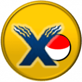 xPOKE PlayToEarn，受 Axie Infinity 启发，在传统游戏中实现。 Pokémon Showdown 服务器的服务器内货币（拥有自己的货币的服务器，即使是 xPOKE 无法控制的），可转
 XSwap Protocol XSwap 协议是 XDC 网络中的第一个 AMM 和 DEX，它允许在安全平台上交易 XRC20 代币。 XSP 是项目的原生代币。它将用于： 质押和农业奖励。 在治理平台上投票。 如今，大多
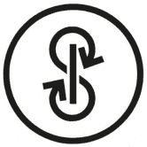 yearn.finance (YFI) yearn.finance 是一个去中心化收益聚合器，它利用 Compound、Curve、Aave 等其他去中心化金融服务来优化您的代币借贷。它将您的存款分配到收益最高
Yeti Finance Yeti Finance 是一种基于 Avalanche 的尖端去中心化借贷协议，允许用户以 LP 代币、Liquid AVAX 等质押资产和 WETH 等基础资产借入高达 11 倍的利率，以及 20 倍以上的收益稳定币
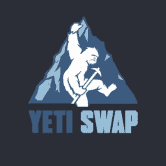 Yeti Swap YetiSwap 是在 Avalanche 上运行的去中心化交易所 (DEX)，使用与 Uniswap 相同的自动做市 (AMM) 模型，具有称为 YTS 的本地治理代币，该代币完全社区分布，能够交易在以太坊和 Avalanche 上
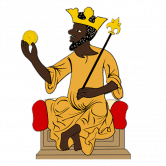 YetuSwap YetuSwap 是基于币安智能链的泛非去中心化协议。 YetuSwap 拥有自己的治理资产 YETU 代币，用户可以使用它对不同的平台提案和协议变更进行投票。 社区可以在 YetuSwap 上耕种和质押
🤹🎮小游戏🎮🤹♂️🔸玩的越多，注入的算力越多，赚的钱就越多👍验证合约。 每个人都可以检查它并 Trust Wallet Token 是 BEP-20 标准的代币，基于币安智能链区块链。 最初，该代币是作为 Trust Wallet 钱包的内部代币创建的，但现在它已经相当普遍并在加密货币交易所进行交易 超过 25%
Goose Farm Finance 养鹅赚BNB！ 要玩，只需购买一些鹅。 鹅以每只鹅每天一个的速度产蛋。 例如：24 只鹅每天生产 24 个鸡蛋，或每小时 1 个。Goose Finance 已与 Fantom Chain 上的 Opera Swap
Gossamer Seed 惊喜、冒险和进入新世界的机会等待着持有者。 保持你的萤火虫靠近，它会进化。 . .Gossamer Seed 是 Bron Studios 的一组神秘 NFT，它们存在于以太坊区块链上。 BRON Studios 是一个加
Grapenopoly Play2Earn Grapenopoly - 我们为想要在玩和学习时赚钱的人推出了 NFT 游戏环境。 主要特点： 低买高卖 NFT 资产 赚取被动收入出租物业 进出 NFT - 外部市场 使用加电代币提高您的租金 第 1
GRB - TRON Lending 糯米饭团是一个开放的 Defi 协议，用于加密存款和借贷服务。获取最重要的 GRB - TRON Lending dApp 指标触手可及 - 分析下面的深度图表，评估 dApp 在不同时间段的活动并做出快
Green Chip Fund 绿筹基金通过买卖量向 GREEN 代币持有者支付 25% 的股息。 相对于 GREEN 流通的总供应量，持有者按比例立即收到他们的 ETH 分红。欢迎来到绿色市政基金的新推特页面！ 关
RUGenerous RuGenerous 协议 AVAX生态系统上的储备货币和DAO RU Generous 是 Avalanche 网络上可用的去中心化储备货币协议和 DAO。RUG 目前在金库中由 AVAX 和 MIM 支持，这为 $RUG 代币价值提
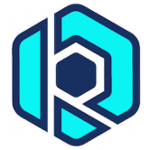 RushDice HTML使用 EOS 和 RUSH 代币的骰子游戏。 RushDice dApp 是一种基于EOS协议的赌博类别的加密资产。现在，根据用户数，它在一般 dApp 排名中排名第 3575位，在赌博类
RushMoon RushMoon 是运行在币安智能链上的自动流动性获取收益农场和 AMM 去中心化交易所，具有许多独特和创造性的功能，让您赚取和赢取。我们完全支持 CAKE-LP v2 质押。 RUSH 价格实
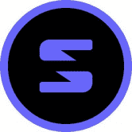 Saber Sabre 是第一家针对在 Solana 上交易锚定资产进行优化的自动化做市商。 我们的协议使 Solana 用户和应用程序能够有效地在稳定的资产对之间进行交易，并通过为平台提供流
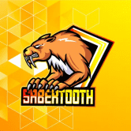 SabertoothSwap Sabertooth 是第四代自动做市去中心化交易所，采用通缩治理代币模型。此外，Sabertooth 是一个包含彩票和 NFT 游戏的收益农业项目。该项目旨在以奖励玩家